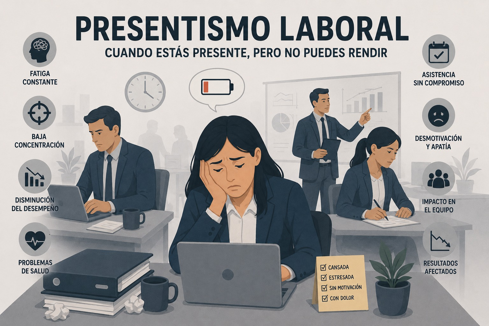

Riesgo psicosocial
Presentismo laboral
Presencia física en el trabajo con baja productividad real por enfermedad, agotamiento, desmotivación o cultura de permanencia.

Definición y concepto
El presentismo laboral es una problemática del siglo XXI que se traduce en una falta de productividad del empleado a pesar de que asiste todos los días a la oficina o a su puesto de trabajo. La necesidad de alargar la jornada laboral innecesariamente solo por aparentar trae consigo importantes consecuencias para las empresas y para su imagen, para el ambiente de trabajo y para la salud de todo el personal (Personio, s. f.).
El término presentismo surge como contraposición a absentismo laboral, porque pretende destacar el hecho de que el trabajador está presente en el lugar de trabajo, incluso aunque ello no repercuta en un aumento de su productividad: «El ‘presentismo’, nuevo fenómeno laboral ante el temor a perder el empleo» (Pladevall, s. f.).
El presentismo es algo que la gente conoce popularmente como ‘calentar el puesto de trabajo’, una situación en la que los trabajadores asisten a sus oficinas, están presentes, pero realmente no logran productividad, debido a otras distracciones o dificultades de salud física o mental (Portafolio, 2021).
Causas
El presentismo laboral es un fenómeno complejo que surge de una combinación de factores culturales, organizativos y personales. A menudo, está impulsado por creencias y prácticas profundamente arraigadas en las empresas, que priorizan la presencia física sobre la productividad real (ifeel, s. f.). Estas son las principales causas detrás de este problema:
Factores organizacionales
- La cultura del “siempre disponible”: Muchas organizaciones fomentan una mentalidad donde estar físicamente presente en el lugar de trabajo se percibe como sinónimo de compromiso y rendimiento. Esto lleva a los empleados a permanecer en sus puestos incluso cuando su salud física o mental está comprometida, perpetuando jornadas extensas y horarios rígidos que no siempre reflejan una carga de trabajo real (ifeel, s. f.).
- La falsa relación entre horas trabajadas y productividad: Existe una creencia errónea de que trabajar más horas garantiza mejores resultados. Sin embargo, estudios han demostrado que la productividad disminuye cuando los empleados están agotados o desmotivados. En lugar de centrarse en los resultados, muchas empresas caen en la trampa de medir el rendimiento por el tiempo que los empleados pasan en sus escritorios (ifeel, s. f.).
- Falta de políticas de bienestar: La ausencia de programas que prioricen la salud mental y física de los empleados agrava el problema. Sin acceso a herramientas de apoyo, como las que ofrece ifeel, los trabajadores no cuentan con los recursos necesarios para gestionar el estrés, la ansiedad o el agotamiento, lo que los lleva a presentarse al trabajo en condiciones subóptimas (ifeel, s. f.).
- Estructuras organizativas rígidas: Las empresas que exigen el cumplimiento estricto de horarios fijos, independientemente de la carga de trabajo, generan un entorno inflexible que dificulta la adaptación a las necesidades cambiantes de los empleados y de la organización. Esto no solo afecta la moral del equipo, sino que también limita la capacidad de innovar y optimizar recursos (ifeel, s. f.).
- Miedo a represalias o estigmatización: En muchas culturas corporativas, los empleados temen que ausentarse, incluso por razones legítimas de salud, sea percibido como una falta de compromiso. Este miedo a represalias o a ser etiquetados como “poco profesionales” los empuja a acudir al trabajo, aunque no estén en condiciones de rendir al máximo (ifeel, s. f.).
- Otros factores organizacionales como: el temor al despido por faltar por lo tanto, va a trabajar incluso sin estar motivado, si no se siente bien o si está enfermo, miedo a no poder cumplir con las funciones asignadas en el trabajo por la escasez de personal, exceso de carga de trabajo, poca motivación, falta de comunicación de objetivos o inexistencia de objetivos y metas claras, objetivos inalcanzables o utópicos, poca supervisión o bajo interés por la medición de resultados, problemas de comunicación por parte de los superiores y casos de acoso laboral (Pladevall, s. f.).
- Situaciones personales complicadas: Factores familiares y/o personales donde el trabajador prefiere estar en el trabajo que en casa para evitar las responsabilidades familiares cotidianas o tener que afrontar situaciones personales que le son desagradables, problemas, convivencia, etc. (Pladevall, s. f.).
Consecuencias
- Entorno laboral insalubre : si un empleado acude al trabajo con una enfermedad contagiosa, puede transmitirla fácilmente a sus compañeros, provocando que estos también enfermen. Esto puede derivar en un aumento del absentismo e incluso en un mayor presentismo (High Speed Training, 2024).
- Los empleados no pueden recuperarse : si un empleado acude repetidamente al trabajo estando enfermo, sobre todo si padece un problema de salud mental, no dispondrá del tiempo necesario para descansar y recuperarse, lo que podría prolongar o agravar su enfermedad. Si no puede trabajar a su nivel habitual, puede incumplir objetivos o plazos de entrega, lo que puede generarle mucho estrés (High Speed Training, 2024).
- Una menor moral en el trabajo: trabajar junto a un compañero desmotivado, infeliz o desinteresado puede suponer un desgaste emocional para todos los miembros del equipo y afectar a las relaciones. Esto puede repercutir negativamente en la moral y el ambiente laboral, reduciendo la motivación y la productividad en general (High Speed Training, 2024).
- Trabajo inseguro: los empleados que acuden a trabajar enfermos tienen más probabilidades de sufrir o provocar accidentes laborales, ya que se concentran menos en realizar sus tareas de forma correcta y segura. Esto los pone en riesgo tanto a ellos como a los demás (High Speed Training, 2024).
- Falta de progreso: el presentismo puede provocar un estancamiento personal y profesional. Si las personas no se comprometen plenamente con sus tareas, es poco probable que desarrollen sus habilidades y, si no se sienten bien, pueden mostrar menos interés en su desarrollo personal. Además, la falta de progreso puede obstaculizar el trabajo de otros compañeros que quizás estén esperando a que el empleado enfermo se recupere por completo antes de asignarle tareas o a que se ponga al día con sus pendientes (High Speed Training, 2024).
- Disminución de la calidad del trabajo: incluso si una persona produce la misma cantidad de trabajo estando enferma, es probable que la calidad se vea afectada y que cometa errores que generen pérdidas de tiempo y dinero. Esto puede tener un efecto dominó, impactando el trabajo de otras personas si dependen de esta persona o trabajan en equipo (High Speed Training, 2024).
Prevención y recomendaciones
- Crea una cultura laboral que permita al empleado ausentarse cuando lo necesite: Está comprobado que una empresa reduce el presentismo laboral cuando motiva al empleado a quedarse en casa en los primeros días de una enfermedad contagiosa o que lo incapacite para realizar sus actividades laborales. Hay situaciones excepcionales, como la enfermedad de un hijo o de un progenitor, donde un empleado puede necesitar ciertos días para atenderlos, y es humano comprenderlo y no forzar a que acuda al trabajo (Personio, s. f.).
- Evalúa las responsabilidades de los empleados: Al analizar la carga laboral de cada empleado hay que asegurarse de que las tareas están correctamente distribuidas. En caso contrario, el empleado se siente abrumado con el gran número de actividades que debe realizar. Del mismo modo, la tarea asignada no debe superar al empleado e ir más allá de sus capacidades o necesitar el uso de alguna herramienta de la que no disponga. Una carga de trabajo justa y adecuada es lo más recomendable (Personio, s. f.).
- Garantiza un ambiente de trabajo agradable: Este factor involucra cuidar la ergonomía para reducir los accidentes laborales comunes y tener un lugar de trabajo con las condiciones adecuadas. Promover la comunicación honesta entre compañeros de trabajo y superiores sin exigir presencialidad sin más es fundamental (Personio, s. f.).
- Incluye políticas relacionadas con el trabajo remoto: Si tu empleado es incapaz de desplazarse a la oficina, siempre puedes ofrecerle la opción de que realice una actividad específica de manera remota. De este modo, él podrá manejar su tiempo y cumplir sus tareas profesionales. Además, podrá cuidar de su salud o atender una situación personal. El trabajo en remoto es una solución a este problema, ya que permite a los trabajadores realizar toda su jornada de trabajo desde su casa o hacerlo en los días acordados y tener así una jornada mixta semanal entre la oficina y el hogar (Personio, s. f.).
- Realiza encuestas a los empleados sobre el presentismo laboral: Permitir que los empleados se expresen anónimamente sobre su tendencia a practicar el presentismo laboral permite indagar en las razones exactas por las que lo hacen. Una encuesta bien realizada y con un análisis correcto permite obtener datos muy valiosos. Según los resultados que obtengas, sabrás cuál medida de prevención puedes aplicar en tu empresa (Personio, s. f.).
Material de apoyo
Mirar video en YouTube (vzImVSJZA3s) Mirar video en YouTube (13C9xrUVx9M)Referencias bibliográficas
Azteca Noticias. (2014, 13 de mayo). ¿Qué es el presentismo laboral? | Noticias [Video]. YouTube. http://www.youtube.com/watch?v=13C9xrUVx9M
High Speed Training. (2024, 18 de abril). Presenteeism in the workplace: What it is and how to reduce it. https://www.highspeedtraining.co.uk/hub/presenteeism-in-the-workplace/
ifeel. (s. f.). Presentismo laboral: qué es, causas y cómo afecta a las empresas. https://ifeelonline.com/es/salud-laboral/presentismo-laboral/
OpenAI. (2026). Imagen conceptual sobre Presentismo Laboral con subtítulo "Cuando estás presente, pero no puedes rendir" ilustrando fatiga constante y baja concentración [Imagen generada por IA]. ChatGPT. https://chatgpt.com
Personio. (s. f.). Presentismo laboral: qué es, causas y cómo evitarlo. https://www.personio.es/glosario/presentismo-laboral/
Pladevall, X. (s. f.). ¿Qué es el presentismo laboral y cómo afecta a las empresas? Acció Preventiva. https://www.acciopreventiva.com/que-es-presentismo-laboral/
Portafolio. (2021, 25 de octubre). ‘Presentismo’ laboral, una amenaza invisible que afecta a las empresas. https://www.portafolio.co/tendencias/presentismo-laboral-una-amenaza-invisible-que-afecta-a-las-empresas-557758
Teletica Costa Rica. (2025, 7 de mayo). “Presentismo laboral: el enemigo silencioso de la productividad” [Video]. YouTube. http://www.youtube.com/watch?v=vzImVSJZA3s